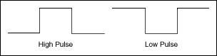
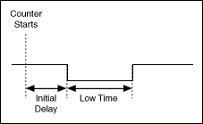
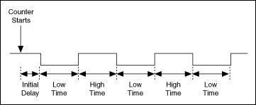

A pulse is a rapid change in the amplitude of a signal from its idle value to an active value for a short period of time. Pulses can have high or low idle states. A pulse with a low idle state starts at the low value (typically zero), pulses high, and returns to low. A pulse with a high idle state starts high, pulses to low, and returns to high.

A pulse train is more than one pulse. You can use a pulse or pulse train as a clock signal, a gate, or a trigger for a measurement or a pulse generation. You can use a single pulse of known duration to determine an unknown signal frequency or to trigger an analog acquisition. You can use a pulse train of known frequency to determine an unknown pulse width.
Each pulse or pulse train consists of three parts:
High Time�The amount of time the pulse is at a high level.
Low Time�The amount of time the pulse is at a low level.
Initial Delay�The amount of time the output remains at the idle state before generating the pulse. The idle state always replaces high time or low time for the first pulse of a generation, depending on the idle state.
The pairing of high time and low time pair is a pulse specification.
The period of the pulse is the sum of the high time and the low time. The frequency is the reciprocal of the period, 1/period.
The following illustration shows the parts of a pulse.

The following illustration shows the parts of a pulse train.

Before you generate a pulse, you need to determine if you want to output the pulse or pulse train in terms of frequency, time, or number of ticks of the counter timebase. For frequency, you need to determine the duty cycle. For time, you specify the high time and the low time. Use the number of ticks if you are using a counter timebase with an unknown rate. When you configure a pulse generation, the output appears at the counter output terminal.
Examples
Refer to the following VIs for examples of performing this measurement. You must have a driver installed to find examples for that driver.
NI-DAQmx
You can use the DAQmx - Data Acquisition VIs to perform this measurement. Find related examples:
�Counter - Continuous Output
You also can use the DAQ Assistant Express VI to perform this measurement.
�Add�
�Find
FieldPoint
You can use the FieldPoint VIs to perform this measurement. Find related examples:
 �Counter - Continuous Output
�Counter - Continuous Output �Add�
�Add�